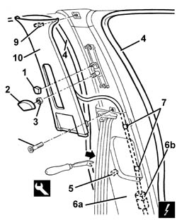
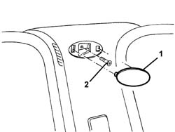
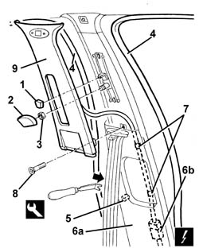

7040H38 central pillar upper element - r r
- Path
- Procedures > 70 FITTINGS > 7040 BODYSHELL INTERIOR TRIMS AND FITTINGS > 7040H roof panel lining > 7040H38 central pillar upper element - r r
- Kind
- repair procedure (removal / refitting; the operation number is the code)
- Applies to
- all engines; all production periods
- Interactive page
- https://sloeber94.github.io/elrnDB-a156/en/#/3238843
Applies to: all engines; all production periods
 Removing
Removing
 Refitting
Refitting1. Remove the knob.
2. Remove the cover.
3. Undo the nut and move the seat belt idler.
4. Remove the door seals near the pillar trim.
5. Release the inner retainer for the lower trim using the special tool.
 | Name | Country |
|---|---|---|
1 | Scraper blade | 1.823.015.000 |
6. Move the lower trim (6a) slightly and disconnect the electrical connection (6b).
 | Name | Connector |
|---|---|---|
6b | Left alarm volumetric sensor |
| Name | Connector |
|---|---|---|
6b | Volumetric sensor for right alarm |
7. Disconnect the wiring retainers.
8. Unscrew the bolt.
9. Remove the pillar trim inner retainers using the special tool.
| Name | Country |
|---|---|---|
1 | Scraper blade | 1.823.015.000 |
10. Keep the lower trim complete with volumetric sensor.

Applies to: all engines; all production periods
If necessary, 5580E22 Anti-theft device VOLUMETRIC SENSORS - R.R. after checking electrical circuit
Applies to: all engines; all production periods
Refitting
RemovingCheck that the trim is undamaged.
If necessary, 5580E22 Anti-theft device VOLUMETRIC SENSORS - R.R. after checking electrical circuit
Position the trim and do up the inner retainers.
Tighten the bolt.
Connect the electrical connection and the wiring retainers.
Engage the lower trim retainer.
Fit the door compartment seals.
Position the seat belt retainer and tighten the nut.
Fit the cover.
Fit the knob.
Applies to: all engines; all production periods; only with equipment: Head Bag
Removing
Refitting1. Prise off the cover, taking care not to damage the trim.
2. Undo the pillar trim retaining bolt.

Applies to: all engines; all production periods; only with equipment: Head Bag
1. Remove the knob.
2. Remove the cover.
3. Undo the nut and move the seat belt idler.
4. Remove the door seals near the pillar trim.
5. Release the lower trim inner retainer using the special tool.
| Name | Country |
|---|---|---|
1 | Scraper blade | 1.823.015.000 |
6. Move the lower trim (6a) slightly and disconnect the electrical connection (6b).
| Name | Connector |
|---|---|---|
6b | Left alarm volumetric sensor |
| Name | Connector |
|---|---|---|
6b | Volumetric sensor for right alarm |
7. Disconnect the wiring retainers.
8. Unscrew the bolt.
9. Keep the pillar trim complete with volumetric sensor.

Applies to: all engines; all production periods; only with equipment: Head Bag
If necessary, 5580E22 Anti-theft device VOLUMETRIC SENSORS - R.R. after checking electrical circuit
Applies to: all engines; all production periods; only with equipment: Head Bag
Refitting
RemovingCheck that the trim is undamaged.
If necessary, 5580E22 Anti-theft device VOLUMETRIC SENSORS - R.R. after checking electrical circuit
Fit the trim.
Tighten the bolt.
Connect the electrical connection and the wiring retainers.
Engage the lower trim retainer.
Fit the door compartment seals.
Position the seat belt retainer and tighten the nut.
Fit the cover.
Fit the knob.
Tighten the bolt.
Fit the cover.
Topics linked from this page (3)
- 5580E22 Anti-theft device VOLUMETRIC SENSORS - R.R. after checking electrical circuit
- K60 Left alarm volumetric sensor
- K61 Volumetric sensor for right alarm
Topics that link to this page (9)
- 5505C41 cabin wiring - r r
- 5580E22 Anti-theft device VOLUMETRIC SENSORS - R.R. after checking electrical circuit
- 7030B12 sliding roof (assembly) - r+r
- 7030B46 sun roof cables , one , lh or rh - r r
- 7030B50 sun roof guide , one , lh or rh - r r
- 7040H10 roof panel lining - r r
- 7040H16 roof panel lining - r r
- 7040H34 central pillar trim - r r
- 7065A18 Front set belt HEIGHT ADJUSTER , (one), left or right - R.R.